원래 컨투어 실행은 INCOMPLETE_NO_CLAIM입니다. Popen child와 산출물 owner의 PID가 달라 소유 신원 검사가 실패했습니다. 실제 프로세스 계보는 UNKNOWN이며, 이 실패를 성공으로 바꾸지 않았습니다.
추가 추론·재시도 없이 이미 저장된12개 artifact를 별도 읽기 전용 감사로 회수했습니다. 필수 파일 해시·native ID 순서·참조 자계·고정 geometry/support 결속 검증을 통과한 자료만 보조 시각화로 표시하며, scalar 차이는 별도 진단으로 전부 공개합니다. 이는 원래 운영 계약의 성공, 독립 정확도 평가 또는 물리 경계 인증을 뜻하지 않습니다.
MotorAI · 고정 3시드 · LR 정책 단일축
사전등록 개선 기준을 충족하지 못함
전체 Bx/By 평균 nRMSE 9.796673% → 10.809640%. 감소량은 -1.012968 pp입니다. 이 결과는 노출 이력이 있는 내부 dev32 비교이며 독립 시험 결과가 아닙니다.
폭128·깊이3·저장45위상·공극 가중1·alpha0, 초기 가중치와 표본 순서, Adam·clip·손실·분할·평가를 유지했습니다. cosine 학습률의 감소 구간만 30에서 20 등가 구간으로 줄였습니다. 같은 세 초기화에서 각각 88,565회 새로 학습했고, 완료된 LR30 대조군과 그 저장된 추론값은 재실행하지 않았습니다.
학습률을 더 일찍 낮추면 같은 업데이트 예산에서 오차가 더 줄어들 수 있다는 가설을 시험했습니다. 중간 점수나 좋은 시드로 조건을 바꾸지 않고 final88565만 판정했습니다. 전체45는 저장된 표본45개이며 실제360도 주기성의 증명이 아닙니다.
17·29·43은 초기값과 학습 순서를 반복할 수 있게 정하는 번호입니다. 세 결과를 모두 제시합니다. 최소–최대와 범위는 초기화·순서에 따른 흔들림이며 신뢰구간이나 독립 표본 검정이 아닙니다.
ALL12_MATCH_EXISTING_SAVED_ARITHMETIC_TOLERANCE
고정12snapshot의 vector/norm nRMSE 24값을 모두 표시합니다. rel/abs 1e-10은 기존 저장 산술 비교값이며 별도 CUDA 추론의 검증된 허용오차가 아닙니다. 차이는 숨기거나 새 문턱으로 통과시키지 않습니다. 컨투어는 보조 저장 산출물이며 저장 평가를 재현한 자계 증거로 주장하지 않습니다.
| case | step | 지표 | 저장 [%] | 회수 [%] | 회수−저장 [pp] | 절댓값 [pp] | 진단 |
|---|---|---|---|---|---|---|---|
| 49 | 0 | vector_nrmse_percent | 20.7336438027 | 20.7336438027 | 0 | 0 | 기존 산술 오차 내 일치 |
| 49 | 0 | magnitude_nrmse_percent | 14.5232556878 | 14.5232556878 | 0 | 0 | 기존 산술 오차 내 일치 |
| 49 | 11 | vector_nrmse_percent | 24.2243186709 | 24.2243186709 | 0 | 0 | 기존 산술 오차 내 일치 |
| 49 | 11 | magnitude_nrmse_percent | 18.8608881822 | 18.8608881822 | -3.55271e-15 | 3.55271e-15 | 기존 산술 오차 내 일치 |
| 49 | 22 | vector_nrmse_percent | 22.8332988675 | 22.8332988675 | 0 | 0 | 기존 산술 오차 내 일치 |
| 49 | 22 | magnitude_nrmse_percent | 15.0341387832 | 15.0341387832 | 0 | 0 | 기존 산술 오차 내 일치 |
| 49 | 33 | vector_nrmse_percent | 22.1745356754 | 22.1745356754 | 0 | 0 | 기존 산술 오차 내 일치 |
| 49 | 33 | magnitude_nrmse_percent | 16.4073180004 | 16.4073180004 | 0 | 0 | 기존 산술 오차 내 일치 |
| 208 | 0 | vector_nrmse_percent | 9.52822651021 | 9.52822651021 | 1.77636e-15 | 1.77636e-15 | 기존 산술 오차 내 일치 |
| 208 | 0 | magnitude_nrmse_percent | 5.98158044069 | 5.98158044069 | 1.77636e-15 | 1.77636e-15 | 기존 산술 오차 내 일치 |
| 208 | 11 | vector_nrmse_percent | 8.37939791916 | 8.37939791916 | 0 | 0 | 기존 산술 오차 내 일치 |
| 208 | 11 | magnitude_nrmse_percent | 5.12213215932 | 5.12213215932 | 0 | 0 | 기존 산술 오차 내 일치 |
| 208 | 22 | vector_nrmse_percent | 8.81614070951 | 8.81614070951 | 0 | 0 | 기존 산술 오차 내 일치 |
| 208 | 22 | magnitude_nrmse_percent | 5.57067338928 | 5.57067338928 | 0 | 0 | 기존 산술 오차 내 일치 |
| 208 | 33 | vector_nrmse_percent | 8.14518279473 | 8.14518279473 | 0 | 0 | 기존 산술 오차 내 일치 |
| 208 | 33 | magnitude_nrmse_percent | 4.96725238949 | 4.96725238949 | 0 | 0 | 기존 산술 오차 내 일치 |
| 408 | 0 | vector_nrmse_percent | 9.97053978778 | 9.97053978778 | 0 | 0 | 기존 산술 오차 내 일치 |
| 408 | 0 | magnitude_nrmse_percent | 6.57312313693 | 6.57312313693 | -1.77636e-15 | 1.77636e-15 | 기존 산술 오차 내 일치 |
| 408 | 11 | vector_nrmse_percent | 9.06161073974 | 9.06161073974 | 0 | 0 | 기존 산술 오차 내 일치 |
| 408 | 11 | magnitude_nrmse_percent | 5.81498972975 | 5.81498972975 | -8.88178e-16 | 8.88178e-16 | 기존 산술 오차 내 일치 |
| 408 | 22 | vector_nrmse_percent | 9.3543389734 | 9.3543389734 | 1.77636e-15 | 1.77636e-15 | 기존 산술 오차 내 일치 |
| 408 | 22 | magnitude_nrmse_percent | 6.10441551591 | 6.10441551591 | 0 | 0 | 기존 산술 오차 내 일치 |
| 408 | 33 | vector_nrmse_percent | 9.15940145435 | 9.15940145435 | 0 | 0 | 기존 산술 오차 내 일치 |
| 408 | 33 | magnitude_nrmse_percent | 5.93776666863 | 5.93776666863 | -8.88178e-16 | 8.88178e-16 | 기존 산술 오차 내 일치 |
아래 nRMSE는 %입니다. PA는 Phase Advance 조건이며 고 회전자 위치각을 뜻하지 않습니다. 토크는 같은 저장 자계와 공통 a1 연산자로 계산한 진단입니다.
| 지표 | 모델 | seed17 | seed29 | seed43 | 평균 | 최소 | 최대 | 범위 |
|---|---|---|---|---|---|---|---|---|
| 전체 Bx/By | W128 LR30 | 9.855497 | 10.122539 | 9.411982 | 9.796673 | 9.411982 | 10.122539 | 0.710557 |
| 전체 Bx/By | W128 LR20 | 10.647941 | 11.220656 | 10.560325 | 10.809640 | 10.560325 | 11.220656 | 0.660331 |
| 과거9위상 부분집합 | W128 LR30 | 9.926616 | 10.185394 | 9.488034 | 9.866681 | 9.488034 | 10.185394 | 0.697360 |
| 과거9위상 부분집합 | W128 LR20 | 10.752551 | 11.367069 | 10.611915 | 10.910512 | 10.611915 | 11.367069 | 0.755154 |
| 공극 a1 | W128 LR30 | 29.286902 | 29.259783 | 24.278814 | 27.608500 | 24.278814 | 29.286902 | 5.008087 |
| 공극 a1 | W128 LR20 | 33.231631 | 32.387958 | 30.056172 | 31.891920 | 30.056172 | 33.231631 | 3.175459 |
| 구리 | W128 LR30 | 19.495246 | 16.087838 | 17.519381 | 17.700821 | 16.087838 | 19.495246 | 3.407408 |
| 구리 | W128 LR20 | 22.736912 | 19.867927 | 18.755619 | 20.453486 | 18.755619 | 22.736912 | 3.981292 |
| PA≥70 case 산술평균 | W128 LR30 | 18.645738 | 19.412313 | 17.394304 | 18.484119 | 17.394304 | 19.412313 | 2.018010 |
| PA≥70 case 산술평균 | W128 LR20 | 20.123915 | 21.184244 | 20.124967 | 20.477709 | 20.123915 | 21.184244 | 1.060328 |
| 공통 a1 Arkkio 토크 | W128 LR30 | 12.205446 | 11.213430 | 12.141213 | 11.853363 | 11.213430 | 12.205446 | 0.992015 |
| 공통 a1 Arkkio 토크 | W128 LR20 | 13.951849 | 12.025407 | 13.123313 | 13.033523 | 12.025407 | 13.951849 | 1.926441 |
전체 자계 감소량 ≥1 pp이면서 두 모델 중 더 큰 시드 범위의 2배를 엄격히 초과해야 합니다. 동결된 LR30 범위에 따른 하한은 1.421114316269 pp이며 모든 비악화 조건도 통과해야 합니다.
| 사전등록 primary 조건 | 판정 |
|---|---|
| 전체 평균 감소 ≥1 pp | FAIL |
| 감소량 >2×더 큰 시드 범위 | FAIL |
| 감소량 >동결 LR30 범위 하한 | FAIL |
| 비악화 지표 | 후보−대조 평균 [pp] | 허용 상한 [pp] | 판정 |
|---|---|---|---|
| 과거9위상 부분집합 | 1.043831 | 0.500000 | FAIL |
| 공극 a1 | 4.283421 | 1.000000 | FAIL |
| 구리 | 2.752665 | 1.000000 | FAIL |
| PA≥70 case 산술평균 | 1.993590 | 1.000000 | FAIL |
| 공통 a1 Arkkio 토크 | 1.180160 | 1.000000 | FAIL |
| 대조−후보 감소 [pp] | seed17 | seed29 | seed43 | 평균 |
|---|---|---|---|---|
| 전체 Bx/By | -0.792444 | -1.098116 | -1.148343 | -1.012968 |
| 과거9위상 부분집합 | -0.825935 | -1.181675 | -1.123881 | -1.043831 |
| 공극 a1 | -3.944730 | -3.128175 | -5.777358 | -4.283421 |
| 구리 | -3.241666 | -3.780090 | -1.236238 | -2.752665 |
| PA≥70 case 산술평균 | -1.478177 | -1.771930 | -2.730664 | -1.993590 |
| 공통 a1 Arkkio 토크 | -1.746403 | -0.811977 | -0.982100 | -1.180160 |
별도 토크 개선 조건: FAIL. 독립 실험축 토크나 native 경계조건의 검증으로 해석하지 않습니다.
학습 곡선은 실제 저장된 6개 평가점입니다. 전체45위상의 연속 train-loss 곡선이 아닙니다. LR 그림의 선은 동결 정책 계산이고 점은 기록된 평가시점 LR입니다. CDF는 각 시드의 1440개 snapshot 전체이며 면적 pooled 지표와 분모가 다릅니다.
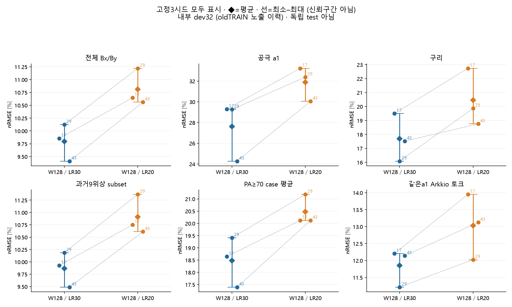
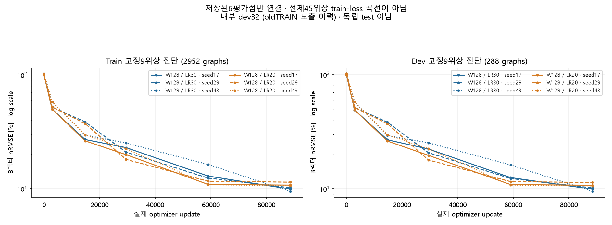
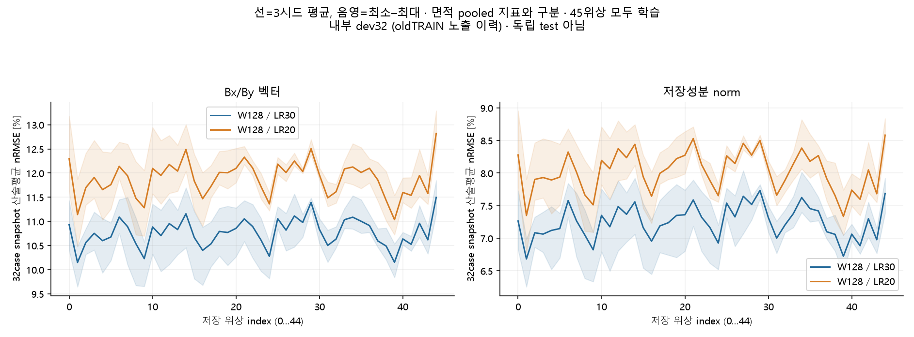
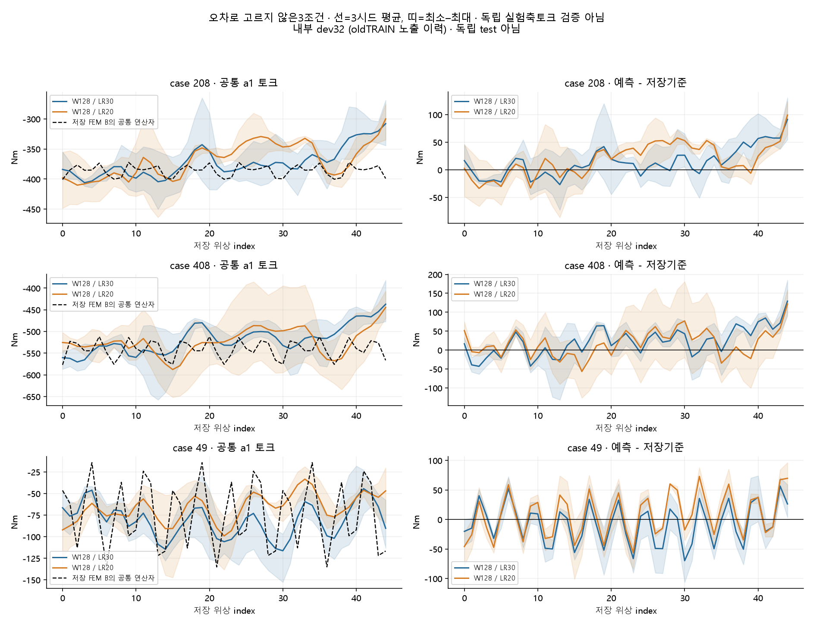
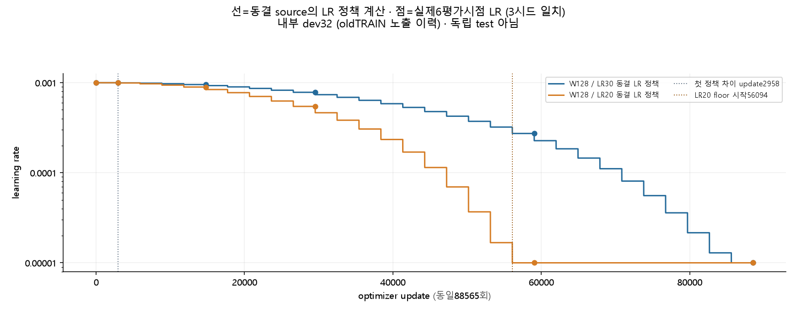
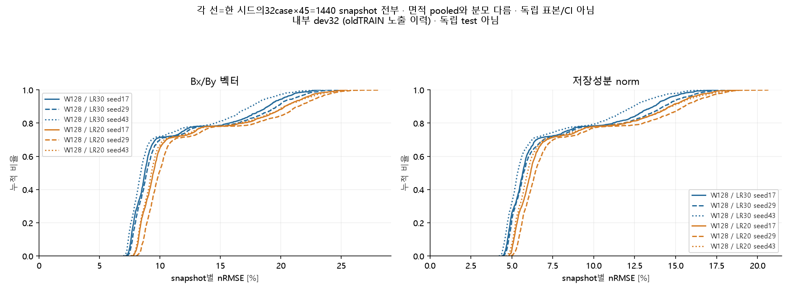
seen9·unused36은 과거의 명칭입니다. 이번 양쪽 학습은 저장45위상을 모두 사용했습니다. 각 영역·위상의 상대오차 분모가 다르므로 nRMSE만으로 전체 SSE 기여율을 추정하지 않습니다.
| 저장 위상 부분집합 | 영역 | 지표 / 단위 | LR30 평균 | LR20 평균 |
|---|---|---|---|---|
| all45 | all | vector_nrmse_percent | 9.796673 | 10.809640 |
| all45 | all | magnitude_nrmse_percent | 6.558665 | 7.259689 |
| all45 | all | vector_rmse_T | 0.096409 | 0.106377 |
| all45 | all | magnitude_rmse_T | 0.064544 | 0.071442 |
| all45 | a1 | vector_nrmse_percent | 27.608500 | 31.891920 |
| all45 | a1 | magnitude_nrmse_percent | 22.715065 | 26.065479 |
| all45 | a1 | vector_rmse_T | 0.238946 | 0.276018 |
| all45 | a1 | magnitude_rmse_T | 0.196594 | 0.225591 |
| all45 | copper | vector_nrmse_percent | 17.700821 | 20.453486 |
| all45 | copper | magnitude_nrmse_percent | 13.374914 | 15.951027 |
| all45 | copper | vector_rmse_T | 0.034906 | 0.040334 |
| all45 | copper | magnitude_rmse_T | 0.026375 | 0.031455 |
| seen9 | all | vector_nrmse_percent | 9.866681 | 10.910512 |
| seen9 | all | magnitude_nrmse_percent | 6.609836 | 7.335529 |
| seen9 | all | vector_rmse_T | 0.097121 | 0.107396 |
| seen9 | all | magnitude_rmse_T | 0.065063 | 0.072206 |
| seen9 | a1 | vector_nrmse_percent | 27.820759 | 32.124658 |
| seen9 | a1 | magnitude_nrmse_percent | 22.930897 | 26.229997 |
| seen9 | a1 | vector_rmse_T | 0.240948 | 0.278222 |
| seen9 | a1 | magnitude_rmse_T | 0.198598 | 0.227170 |
| seen9 | copper | vector_nrmse_percent | 18.027815 | 20.666315 |
| seen9 | copper | magnitude_nrmse_percent | 13.697306 | 16.084313 |
| seen9 | copper | vector_rmse_T | 0.035561 | 0.040766 |
| seen9 | copper | magnitude_rmse_T | 0.027019 | 0.031728 |
| unused36 | all | vector_nrmse_percent | 9.779081 | 10.784241 |
| unused36 | all | magnitude_nrmse_percent | 6.545802 | 7.240582 |
| unused36 | all | vector_rmse_T | 0.096230 | 0.106121 |
| unused36 | all | magnitude_rmse_T | 0.064413 | 0.071250 |
| unused36 | a1 | vector_nrmse_percent | 27.554834 | 31.833354 |
| unused36 | a1 | magnitude_nrmse_percent | 22.660326 | 26.024112 |
| unused36 | a1 | vector_rmse_T | 0.238441 | 0.275464 |
| unused36 | a1 | magnitude_rmse_T | 0.196087 | 0.225195 |
| unused36 | copper | vector_nrmse_percent | 17.617919 | 20.399823 |
| unused36 | copper | magnitude_nrmse_percent | 13.292659 | 15.917442 |
| unused36 | copper | vector_rmse_T | 0.034740 | 0.040225 |
| unused36 | copper | magnitude_rmse_T | 0.026211 | 0.031386 |
signed B² bias는 부호가 있는 편향이며 감소 방향 자체가 정확도 개선을 뜻하지 않습니다. B²·토크는 저장 자계의 파생 진단이며 AC 손실이나 실측 토크의 검증이 아닙니다.
| 저장 진단 / 명시된 단위 | LR30 평균 | LR20 평균 |
|---|---|---|
| copper_B2/all45/absolute_signed_bias_percent | 2.684235 | 3.722380 |
| copper_B2/all45/area_weighted_relative_MAE_percent | 6.033728 | 7.812372 |
| copper_B2/all45/signed_bias_percent | -2.684235 | -3.722380 |
| torque/case_arithmetic/mean_case_abs_mean_error_Nm | 25.050136 | 29.138339 |
| torque/case_arithmetic/mean_case_abs_ripple_error_Nm | 65.103583 | 75.049250 |
| torque/case_arithmetic/mean_case_nrmse_percent | 13.883728 | 15.155958 |
| torque/case_arithmetic/mean_case_ripple_error_abs_truth_rms_normalized_percent | 15.947254 | 19.993081 |
| torque/pooled/nrmse_percent | 11.853363 | 13.033523 |
| torque/pooled/rmse_Nm | 50.010320 | 54.989514 |
| torque/pooled/truth_rms_Nm | 421.908282 | 421.908282 |
점수를 보기 전에 고정한 seed17, case208·408·49, step0·11·22·33을 사용했습니다. 세 조건은 모두460 Arms 메타데이터로 전류 범위 실험이 아닙니다. 저장 FEM 기준·LR30·LR20와 오차는 같은 색 범위와 T 단위입니다. 보간·평활·회전·주기 복제를 하지 않았습니다.
회색은 a2 제외 또는 미지원 공간이며 stale a2 polygon을 그리지 않았습니다. 확대 위치는 오차가 아닌 기존 a1 기하로 고정했습니다. clipping 개수와 면적비는 확대 화면이 아닌 전체 retained support 기준입니다. source basis 및 BC/sign/pair는 UNKNOWN입니다.
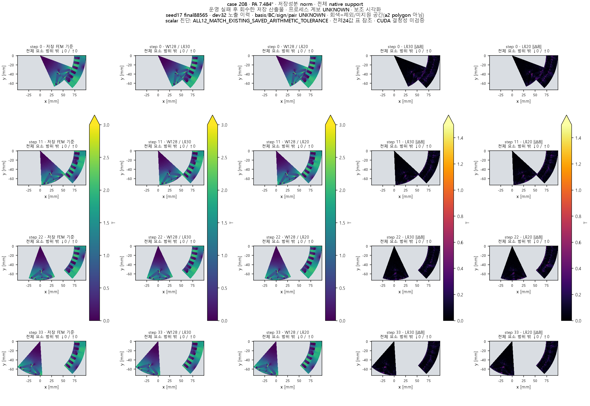
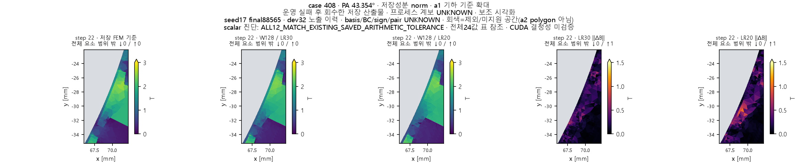
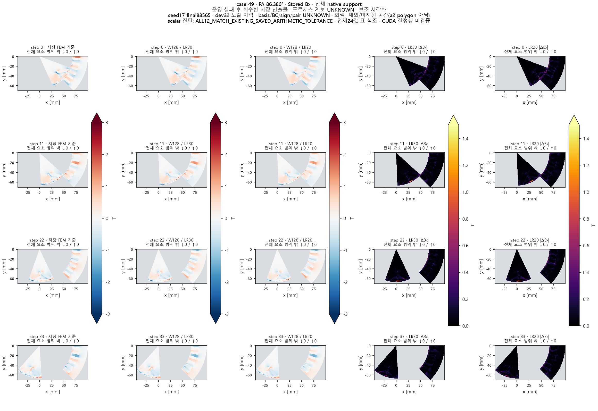
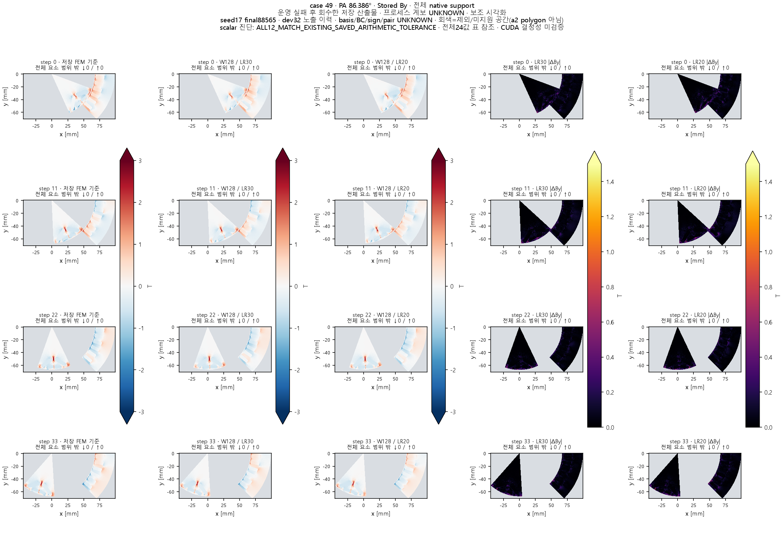
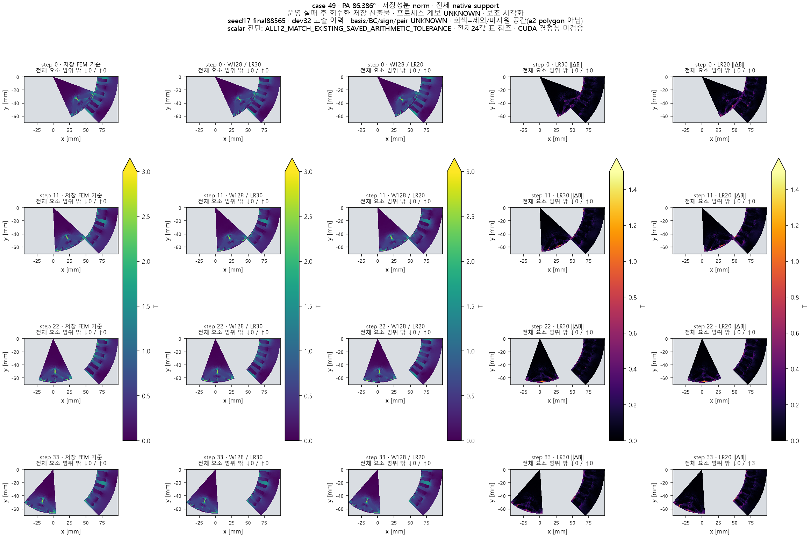
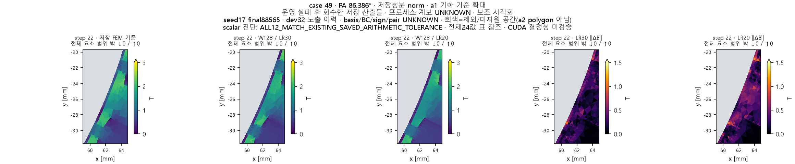
| 모델 | seed | 학습 worker [s] | 평가점 포함 진단 [s] | 최종 평가 worker [s] | 업데이트 | 평가 graph |
|---|---|---|---|---|---|---|
| 저장 LR30 | 17 | 3185.922000 | 358.686000 | 119.828000 | 88565 | 1440 |
| 저장 LR30 | 29 | 3189.422000 | 357.828000 | 119.984000 | 88565 | 1440 |
| 저장 LR30 | 43 | 3190.563000 | 358.219000 | 119.235000 | 88565 | 1440 |
| 신규 LR20 | 17 | 3191.859000 | 359.030000 | 118.921000 | 88565 | 1440 |
| 신규 LR20 | 29 | 3192.594000 | 359.266000 | 119.000000 | 88565 | 1440 |
| 신규 LR20 | 43 | 3191.421000 | 358.389000 | 119.234000 | 88565 | 1440 |
같은 업데이트 수가 같은 GPU 비용을 뜻하지는 않습니다. 학습 assessment 시간은 학습 worker 시간에 포함됩니다. FEM 대비 속도 배수는 측정하지 않았습니다.
형상·운전조건·회전자 위치와 native 요소의 특징을 입력받아 메시 이웃의 정보를 모으고 요소별 Bx/By를 예측합니다. 상세한 자계 분포를 빠르게 근사하는 데 활용할 수 있지만, 학습 범위 밖 형상·전류·주기 경계의 신뢰도는 별도 검증이 필요합니다. 이번 변경은 학습률뿐이며 회전자–고정자 새 연결을 추가하지 않았습니다.
native BC·부호·성분 기저·boundary pair는 UNKNOWN입니다. case40의 no-wrap P0 공극 연결은 전체45위상 coverage FAIL로 유지합니다. a2 감독·면적 제외, 보호 R1_0199/R1_0076와 alias·old val/test 제외, HalfSC32/4·exact bridge0·canonical AF 범위를 유지했습니다. case40 원천 pilot의 일치를 전체 corpus 물리 검증으로 확대하지 않습니다.
새 FEA·prior·teacher는 사용하지 않았고 과거 A2/C/G/alpha/w3 결과도 재실행하거나 덮어쓰지 않았습니다. 이번 한 실험 이후 추가 학습을 자동으로 시작하지 않습니다.